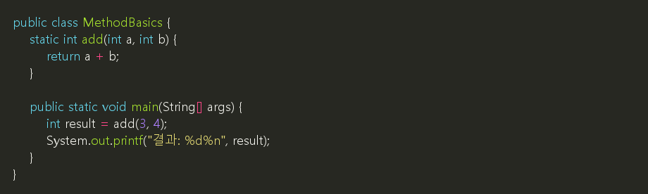
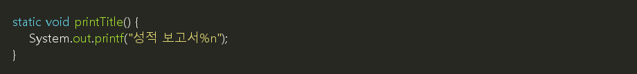
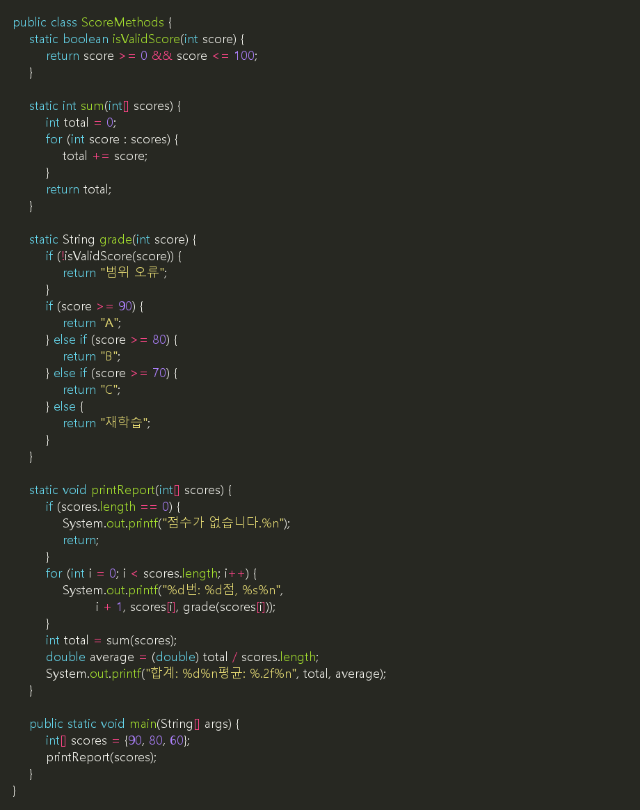
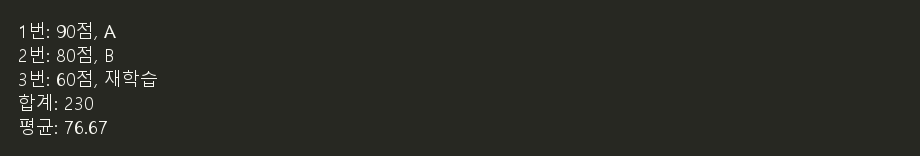
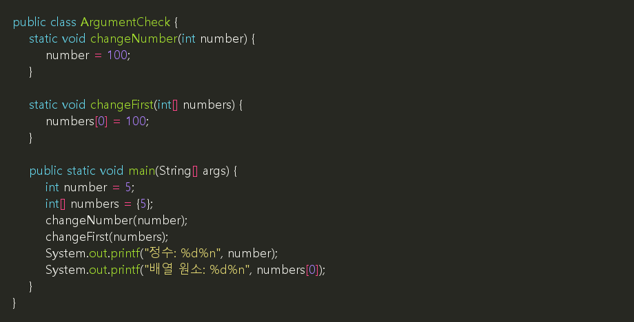
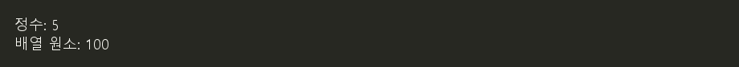

앞에서는 main 안에서 입력, 계산, 출력을 모두 처리했습니다. 이번에는 배열의 점수를 처리하는 코드를 기능별로 나눕니다.
- 메서드의 선언과 호출을 구분합니다.
- 매개변수와 반환값을 사용합니다.
- 지역변수와 배열 전달의 동작을 확인합니다.
1. 메서드의 입력·처리·결과
메서드(method)는 이름을 붙여 묶어 둔 실행 코드입니다. System.out.printf()와 scanner.nextInt()도 메서드 호출입니다. 이제 직접 메서드를 정의합니다.
| 용어 | 의미 | 예 |
|---|---|---|
| 선언 | 메서드의 동작을 정의 | static int add(int a, int b) { ... } |
| 호출 | 정의한 동작을 실행 | add(3, 4) |
| 매개변수 | 전달받은 값을 사용하는 변수 | 선언의 a, b |
| 인수 | 호출할 때 전달하는 값 | 호출의 3, 4 |
| 반환값 | 호출한 곳으로 돌려주는 결과 | return a + b;의 계산값 |
파일 이름은 MethodBasics.java로 저장합니다.

예상 출력은 결과: 7입니다. 프로그램은 main에서 시작하고, add(3, 4)를 만나면 add를 실행한 뒤 돌아옵니다. return은 결과를 돌려주면서 현재 메서드를 끝냅니다.
💡 참고: 이 장에서는 main과 같은 클래스에 static 메서드를 만듭니다. static 메서드는 그 클래스의 객체를 만들지 않고 호출할 수 있습니다. 객체마다 다르게 동작하는 메서드는 다음 클래스 교안에서 배웁니다.
⚠️ 새 메서드는 main의 중괄호 밖, 클래스의 중괄호 안에 작성합니다. Java에서는 메서드 안에 다른 메서드를 선언할 수 없습니다.
2. 반환값이 없는 void 메서드
void는 돌려주는 값이 없다는 뜻입니다. 화면 출력만 하는 동작은 반환값이 없어도 됩니다. 다음 선언은 MethodBasics 클래스 안에서 main 밖에 추가할 수 있습니다.

main에서 printTitle();로 호출합니다. int result = printTitle();처럼 반환값을 저장할 수는 없습니다. 화면에 출력하는 것과 값을 반환하는 것은 서로 다릅니다.
3. 배열을 전달해 통계 구하기
8-1의 점수 통계를 메서드로 분리합니다. 배열에 유효한 점수만 들어 있다고 가정합니다. 비어 있을 때는 평균을 계산하지 않습니다.
파일 이름은 ScoreMethods.java로 저장합니다.

예상 실행 결과:

| 메서드 | 받는 값 | 반환형 | 역할 |
|---|---|---|---|
isValidScore |
정수 하나 | boolean |
점수 범위 검사 |
sum |
정수 배열 | int |
합계 계산 |
grade |
정수 하나 | String |
등급 문자열 반환 |
printReport |
정수 배열 | void |
보고서 출력 |
return;처럼 값 없이 쓰면 void 메서드를 바로 끝냅니다. 앞의 return "A";는 결과를 반환하고 끝냅니다. break는 반복문이나 switch를 끝내므로 역할을 구분합니다.
4. 지역변수와 값 전달
지역변수는 메서드나 블록 안에 선언한 변수입니다. 서로 다른 메서드에 같은 이름의 변수가 있어도 각각 별개입니다. Java는 호출할 때 값을 복사해서 전달합니다. 배열은 배열을 가리키는 참조값이 복사됩니다.
파일 이름은 ArgumentCheck.java로 저장합니다.

예상 실행 결과:

changeFirst의 매개변수와 호출한 곳의 배열 변수가 같은 배열을 가리켜 원소 변경이 보입니다. 반대로 매개변수에 numbers = new int[] {100};을 대입하면 매개변수만 새 배열을 가리키므로 호출한 곳의 배열 변수는 바뀌지 않습니다.
📌 배열이 바뀔 수 있다는 이유로 Java가 참조에 의한 전달을 한다고 설명하지 않습니다. 참조값 자체를 복사해서 전달하는 방식입니다.
5. 다른 언어의 함수와 비교하기
함수는 다른 언어에서 이름을 붙인 실행 단위를 부르는 일반적인 표현입니다. Java에서는 클래스 안의 메서드로 작성합니다.
| 비교 | Java | Python | JavaScript |
|---|---|---|---|
| 선언 | static int add(int a, int b) { return a + b; } |
def add(a, b): 다음 줄 들여쓰기 |
function add(a, b) { return a + b; } |
| 호출 | add(3, 4) |
add(3, 4) |
add(3, 4) |
| 결과 반환 | return 결과; |
return 결과 |
return 결과; |
| 반환 자료형 | 선언에 명시 | 보통 생략 | 보통 생략 |
Java에서 결과를 돌려주는 메서드는 해당 경로에서 반환값이 있어야 합니다. 예를 들어 int 메서드를 선언하고 계산 결과를 출력만 하면 컴파일 오류가 납니다.
6. 연습: 최고점 메서드 추가하기
ScoreMethods.java를 복사해 ScoreMethodPractice.java로 만들고 클래스 이름도 바꿉니다.
static int maxScore(int[] scores)를 추가합니다.- 원소가 하나 이상인 배열만 전달한다고 조건을 정합니다.
- 첫 원소를 최댓값으로 시작하고, 반복 후 결과를 반환합니다.
printReport의 빈 배열 검사 뒤에서 호출해 최고점을 출력합니다.
✅ 확인할 것:
{90, 80, 60}에서는 최고점 90,{0}에서는 0입니다.- 빈 배열에서는
maxScore를 호출하지 않습니다. grade(89),grade(90),grade(-1),grade(101)의 결과를 확인합니다.- 동일한 범위 검사나 등급 판정 코드를 여러 곳에 복사하지 않습니다.
참고: Java 메서드
- teaching/materials/java/9-1_methods.md최종 수정일: 2026-11-12 10:47